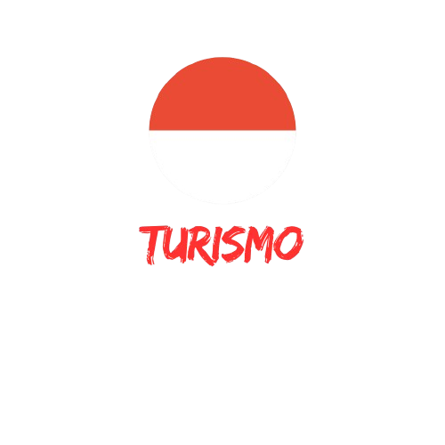

Descubra a magia da Indonésia: um paraíso de culturas vibrantes, paisagens deslumbrantes e tradições milenares
Waterbom Bali - Kuta
No Waterbom Bali, você pode experimentar as muitas maravilhas de um parque aquático de ponta. Lá dentro, você encontrará muitos toboáguas, incluindo o Constrictor, que bombeia adrenalina, com impressionantes 250 metros. Você pode se refrescar em piscinas e flutuar ao longo do Lazy River em um flutuador aquático, cercado por vegetação tropical. Os pequenos terão muitas atrações para aproveitar, e os adultos podem receber massagens ou coquetéis refrescantes em um bar aquático.

Tegalalang Rice Terrace
Os campos de arroz são uma marca da cultura de Bali e se tornaram pontos turísticos, de tão bonitos que são. Para conhecer um deles, Tegalalang é um ótimo passeio. O campo de arroz é de um verde intenso e pode ser muito bacana para ver mais de perto como é produzido esse grão tão popular em Bali e no Brasil. Tegalalang é uma vila tradicional de Bali que tem campos de arroz muito bonitos e diversos moradores que trabalham neles. O local tem um morro recortado, como se fossem degraus, de forma a fazer a irrigação natural da plantação. A paisagem do lugar é linda e rende belas fotos... Para quem quiser apreciar a plantação ainda melhor, é possível caminhar por entre as plantas e até ver pessoas trabalhando. Próximo ao campo, fica um mirante, ideal para fazer fotos. Também existem vários restaurantes nas redondezas do lugar, alguns deles com mesas intimistas, que oferecem vistas incríveis para a plantação.
Prambanan Temple
Construído no século X, este é o maior complexo de templos dedicado a Shiva na Indonésia. Elevando-se acima do centro do último desses quadrados concêntricos estão três templos decorados com relevos ilustrando o épico do Ramayana , dedicados às três grandes divindades hindus (Shiva, Vishnu e Brahma) e três templos dedicados aos animais que os servem.

Sunset at Prambanan Temple
A maioria desses templos menores foi fortemente afetada pelo passar do tempo, mas alguns foram restaurados com sucesso. Meu favorito foi o Templo Sewu. Ele fica um pouco mais longe do Templo Prambanan principal e não muitas pessoas vêm aqui. Após ser abandonado, na década de 1990, Prambanan foi restaurado e trazido de volta à vida. Hoje em dia, é um importante local religioso para as comunidades hindus balinesas e javanesas. Quase um milhão de pessoas visitam este templo todos os anos, tornando-o uma das atrações mais visitadas da Ilha de Java.